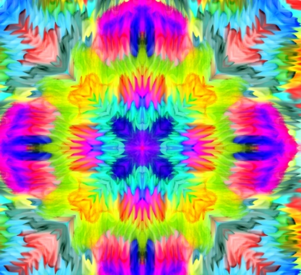
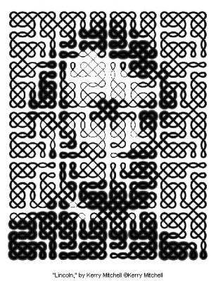

Influence
Influence Kerry Mitchell may not be one of the most know or the top people who created the connction between math and art, but she does have an influence for those who see it. Not all of her work is done using math, however she does have some very interesting peices like that which is to the left. This peices uses all the colors she continues to use thought her peices, but it also includes symmetry, which was completed thought loops. She is also an influence not only for her art but also like mentioned in the home tab that she had a few diseases in which she is working thought as she continues to create her art.
 The image of President Lincoln to the right is created also by Kerry graphically. There are 500 square tiles used to complete this image, there are also five different type of tiles being included to. This showing that even something so simple can be seen as art but be done by math.